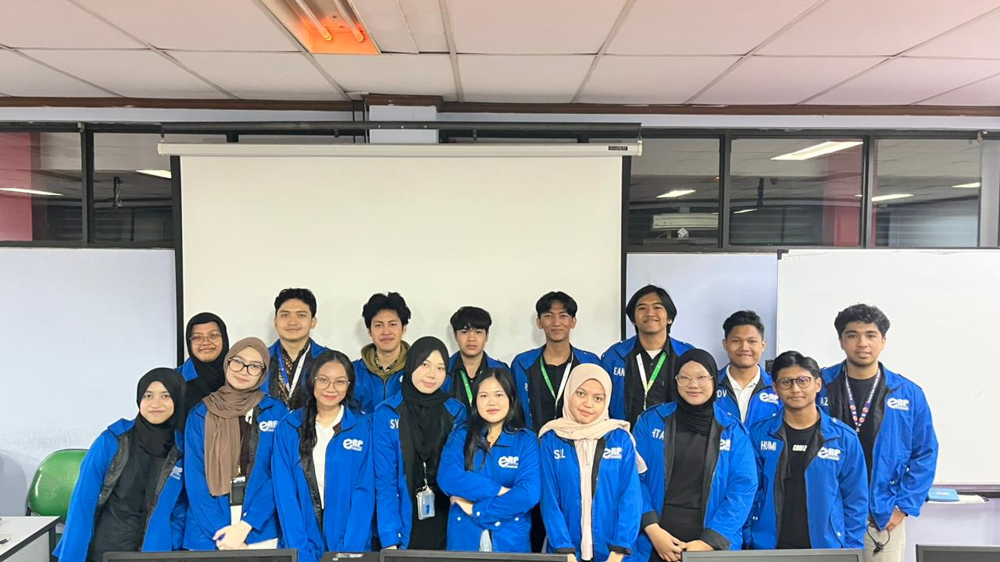
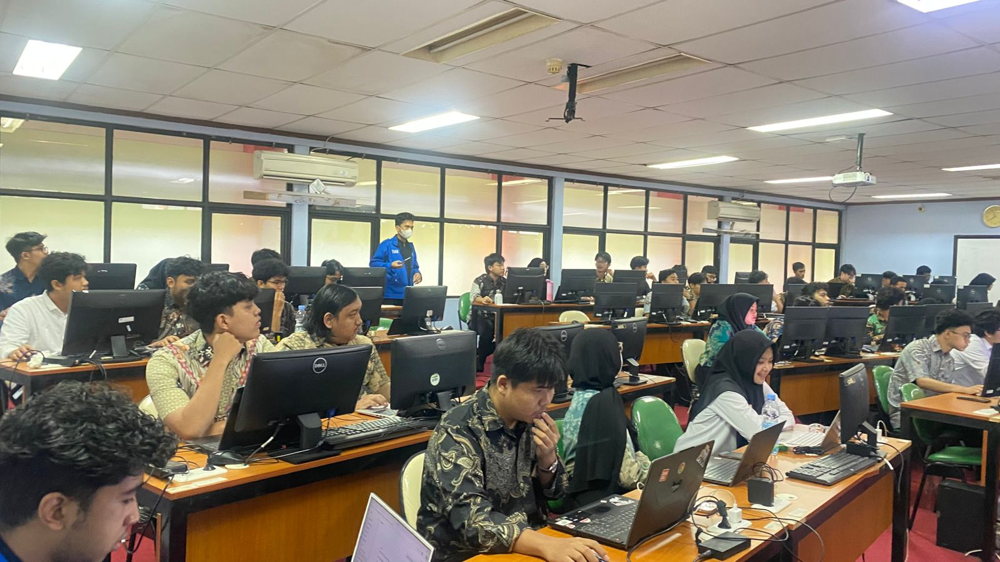
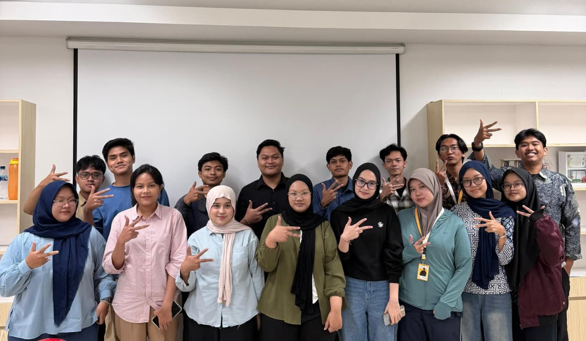

01 / ROLE OVERVIEW
Learning in the SAP Environment
Across two consecutive role periods in the SAP HR050 Human Capital Management practicum, I contributed to both learning support and academic operations. My responsibilities included supporting SAP HCM exercises, assisting with assessment resources, coordinating schedules and assistant allocations, and helping align practicum requirements with academic delivery. The experience exposed me to foundational HR processes, including organizational management, personnel administration, time management, and personnel development.
02 / RESPONSIBILITIES & CONTRIBUTIONS
What I Supported
HCM Learning Facilitation
Supported SAP HCM practicum exercises and helped connect HR concepts with the relevant system activities.
Assessment & Evaluation Support
Contributed to the preparation, review, and alignment of assessment resources for practicum activities.
Scheduling & Assistant Coordination
Supported practicum schedules, assistant shift allocations, and operational coordination.
Academic Operations
Coordinated academic requirements and communication among faculty, assistants, and practicum activities, including question-bank development and schedule preparation.
03 / SELECTED LEARNING ACTIVITIES
From Concepts to Practice
Organizational Management & Employee Structure
Organizational units, positions, employee assignments, and structure reports represent relationships within an organization.
Connected the relevant SAP exercise steps with the organizational relationships they represent.
Personnel Administration & Employee Records
Personnel actions and employee master-data records represent HR events and changes.
Helped learners follow the relevant exercise steps and understand how employee records relate to personnel actions.
Time Management & Personnel Development
Time records, attendance, qualifications, and position requirements support workforce administration and development.
Connected the selected exercise activities with the employee information being maintained and reviewed.
04 / MATERIALS AND ACADEMIC SUPPORT
Resources Behind the Practicum
These visual summaries describe learning and support resources. They are illustrative diagrams, not official system screenshots or claims of sole authorship.
Organizational Management
Reference material for organizational structures, positions, employee assignments, and reporting.
ILLUSTRATIVE LEARNING AID · NOT AN OFFICIAL SYSTEM SCREENPersonnel Administration
Practice reference for personnel actions, employee master data, and additional-payment records.
ILLUSTRATIVE LEARNING AID · NOT AN OFFICIAL SYSTEM SCREENTime & Development
Practice references connecting time records, attendance, qualifications, and position requirements.
ILLUSTRATIVE LEARNING AID · NOT AN OFFICIAL SYSTEM SCREENAssessment & Coordination
Redacted assessment frameworks, schedules, or coordination examples, only where approved for publication.
ILLUSTRATIVE LEARNING AID · NOT AN OFFICIAL SYSTEM SCREEN05 / DOCUMENTATION
Snapshots from the Practicum
These visual summaries are illustrative learning aids for selected HR processes, not official SAP screens or claims of sole authorship.



SKILLS DEMONSTRATED